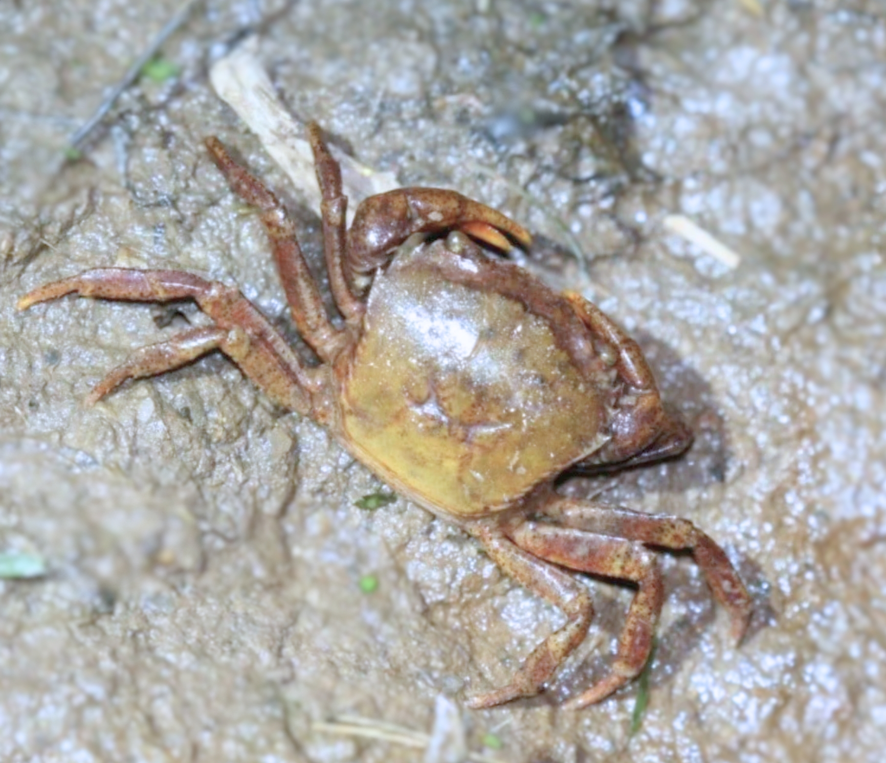
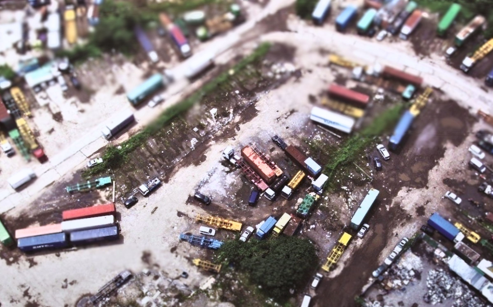

強調香港本土瀕臨絕種的蟹類物種——鐮刀束腰蟹（Somanniathelphusa zanklon）的生態重要性。內容討論城市發展，修改河道以保護當地生物多樣性的可能方案。
探討將軍澳的居住品質，透過公開調查和空間分析，收集並分析居民對不同住宅區的看法，以找出最適宜居住的區域。

這個故事地圖探討香港的棕地問題，內容涵蓋棕地的分佈、存在的問題以及對環境的影響。強調需要妥善規劃棕地用途，以減少污染、提升生活素質。